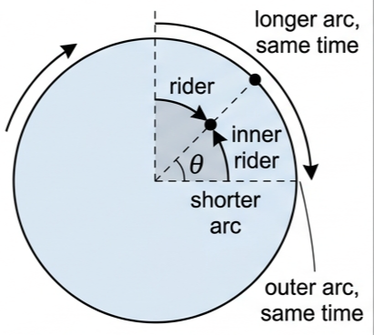
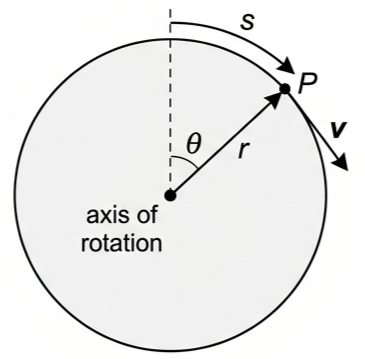
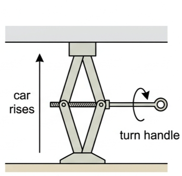
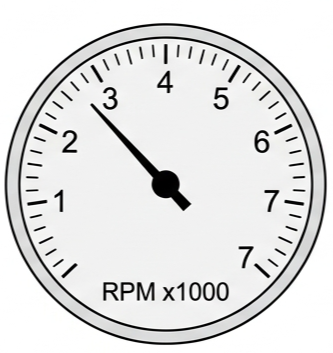
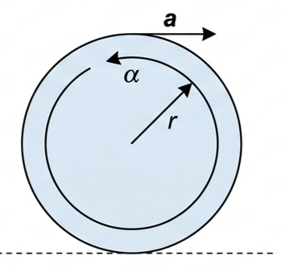
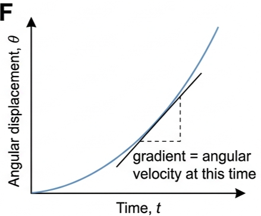
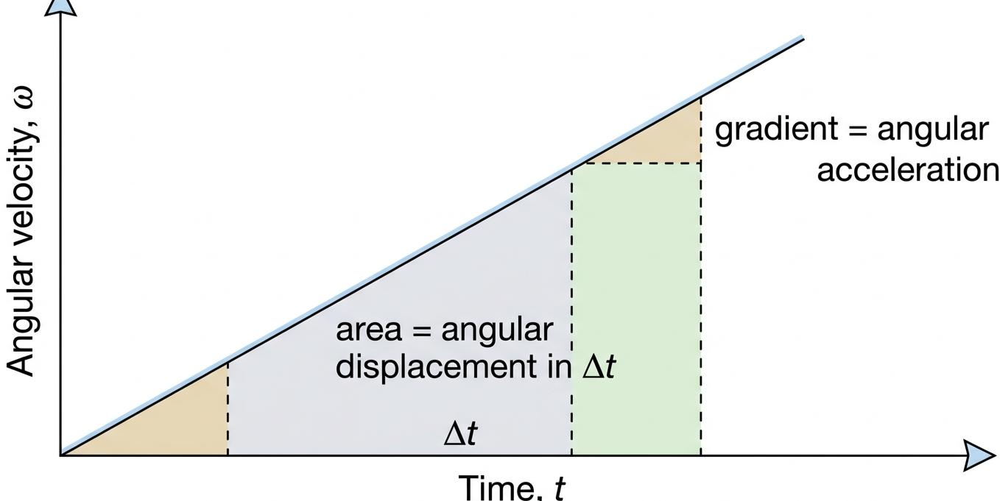

Part of A.4 Rigid Body Mechanics
· Unit A — IB Physics 2023
2 Lesson 2 of 5 · A.4 Rigid Body Mechanics
Angular Velocity and Acceleration
Every point on a spinning wheel shares the same angular velocity — but a point near the rim moves much faster than one near the axle. This lesson gives you the vocabulary and equations to describe rotation the way you already describe straight-line motion.
🎡 Hook – one ride, two very different speeds
Picture a carriage on a big rotating fairground ride, one passenger sitting near the centre and another near the outer rim. Both complete a full circle in exactly the same time, sweeping through the same angle every second. They have identical angular velocity. But the passenger at the rim is covering far more distance per second than the one near the centre — their linear speed is much greater.

Fig 1 — Both riders sweep the same angle every second (same ω), but the outer rider covers a much longer arc in that time (greater v).
💡 Diagnostic question (think – then read on) — the outer rider is twice as far from the axis as the inner rider. Compare their angular velocities and their linear speeds. Angular velocity is identical for both — every point on a rigid rotating body turns through the same angle in the same time. Linear speed obeys \(v=\omega r\), so the outer rider, at twice the radius, moves at twice the linear speed.
📐 Angular displacement
Angular displacement, \(\theta\), is the total angle through which a rigid body has rotated from a fixed reference position. It is measured in radians (or degrees). A point P a distance \(r\) from the axis of rotation, having travelled an arc length \(s\) along the circumference, has an angular displacement:
Angular displacement
$$\theta = \frac{s}{r}$$

Fig 2 — Point P is a distance r from the axis and has travelled an arc length s; θ = s/r.
🔧 Tool 1 – Experimental techniques (measuring angle). Describe how you would measure the total angular displacement (in radians) through which a car jack handle would need to be rotated in order to raise the side of the car exactly 5.0 cm. Estimate the percentage uncertainty in your measurement. Measure the handle's radius of rotation r and, using the jack's thread pitch or a marked scale, find the arc length s the handle tip travels for a 5.0 cm rise; then θ = s/r. Uncertainty comes mainly from reading r and s with a ruler — a small absolute reading error becomes a larger percentage error the smaller the measured quantity is.

Fig 3 — A car jack. Rotating the handle by some angular displacement raises the car by a corresponding linear distance.
🌀 Angular velocity
Angular velocity, \(\omega\), is defined as the change of angular displacement divided by the time taken. It is a vector quantity, but its direction will not be important here, so angular speed and angular velocity can be treated as equivalent.
Angular velocity · SI unit rad s⁻¹
$$\omega = \frac{\Delta\theta}{\Delta t}$$
Angular velocities are often quoted in rotations per minute (rpm): 1 rpm is equal to 0.10 rad s⁻¹ (to 2 significant figures).
For a body rotating with constant angular speed and period \(T\):
Combining these gives the key link between angular and linear speed:
Linear speed of a point at radius r
$$v = \omega r$$
All points on a rigid rotating object have the same angular velocity, but their linear speeds are greater the further they are from the axis of rotation.

Fig 4 — A car's tachometer displays engine rpm ÷ 1000. Converting to rad s⁻¹ needs the 1 rpm ≈ 0.10 rad s⁻¹ relationship.
⚡ Angular acceleration
Angular acceleration, \(\alpha\), is defined as the rate of change of angular velocity with time:
Angular acceleration · SI unit rad s⁻²
$$\alpha = \frac{\Delta\omega}{\Delta t}$$
There is a simple relationship between angular acceleration and the linear acceleration of a point a distance \(r\) from the axis of rotation. Since \(\Delta\omega = \Delta v / r\):
Relating angular and linear acceleration
$$\alpha = \frac{a}{r}$$
For example, a motorcyclist accelerating linearly at \(a=5.3\ \text{m s}^{-2}\) is also the rate at which the edge of the tyre is accelerating. If the wheel and tyre have an outer radius of 34 cm, the angular acceleration of the wheel is \(\alpha = a/r = 5.3/0.34 = 16\ \text{rad s}^{-2}\).

Fig 5 — Comparing linear and angular acceleration: α = a/r.
⚠️ Common mistake — do not confuse angular acceleration with centripetal acceleration. Angular acceleration, \(\alpha=\Delta\omega/\Delta t\), describes how fast the rotation rate itself is changing. Centripetal acceleration, \(v^2/r\), keeps a point moving in a circle and exists even when \(\omega\) is constant.
🧮 Equations of motion for uniform angular acceleration
By direct analogy with linear motion, we can write down equations for uniform angular acceleration. \(\omega_{\text{i}}\) is the initial angular velocity at the start of time \(t\); \(\omega_{\text{f}}\) is the final angular velocity at the end of that time.
Analogous to s = ut + ½at² and friends
$$\Delta\theta = \frac{(\omega_{\text{f}}+\omega_{\text{i}})}{2}t$$
$$\omega_{\text{f}} = \omega_{\text{i}} + \alpha t$$
$$\Delta\theta = \omega_{\text{i}}t + \tfrac{1}{2}\alpha t^2$$
$$\omega_{\text{f}}^2 = \omega_{\text{i}}^2 + 2\alpha\Delta\theta$$
📈 Graphs of rotational motion
Graphs for rotational motion are interpreted in exactly the same way as graphs for linear motion.
Graph type
Axes (X, Y)
Shape
What to read
Angular displacement–time
Time, t · Angular displacement, θ
Straight line for constant ω; curved if accelerating
Gradient at any point = angular velocity, ω, at that time
Angular velocity–time
Time, t · Angular velocity, ω
Straight line for constant angular acceleration
Gradient = angular acceleration, α; area under the graph in time Δt = angular displacement in that time

Fig 6 — θ–t graph: the gradient at any instant is the angular velocity, ω, at that instant.

Fig 7 — ω–t graph: the gradient is the angular acceleration, α; the shaded area is the angular displacement, Δθ, over that time interval.
✍️ Worked example 1 – a fairground ride (A4.3)
In a fairground ride which is moving with a constant linear speed, the passengers complete one rotation in 3.9 s. (a) Calculate their angular velocity. (b) What is their total angular displacement after one minute? (c) Determine the angle between their current position and their starting position.
1
Identify: uniform circular motion, so \(\omega = \Delta\theta/\Delta t = 2\pi/T\), with period \(T=3.9\) s.
2
Data: \(T = 3.9\) s. One rotation \(= 360^\circ = 2\pi\) rad.
3
Equation (a): \(\omega = \dfrac{360}{3.9}\) or \(\omega = \dfrac{2\pi}{3.9}\) (b) in 60 s they complete \(60/3.9=15.38\) rotations. (c) that is 15 whole rotations plus 0.38 of a rotation.
4
Answer (a): \(\omega = 92^\circ\text{s}^{-1}\) or \(1.6\ \text{rad s}^{-1}\). (b) total angle moved through \(= 15.38 \times 2\pi = 97\) rad \((5.5\times10^{3\circ})\). (c) displacement \(= 0.38 \times 2\pi = 2.4\) radians \((1.4\times10^{2\circ})\) from the starting position.
✍️ Worked example 2 – a motor speeding up (A4.4)
A motor spinning at 24 rotations per second accelerates uniformly to 33 rotations per second in 6.7 s. Calculate its angular acceleration.
1
Identify: convert both speeds to rad s⁻¹ first (1 rotation = \(2\pi\) rad), then use \(\alpha = \Delta\omega/\Delta t\).
2
Data: initial angular velocity \(= 24 \times 2\pi = 151\ \text{rad s}^{-1}\). Final angular velocity \(= 33 \times 2\pi = 207\ \text{rad s}^{-1}\). \(\Delta t = 6.7\) s.
3
Equation: \(\alpha = \dfrac{207-151}{6.7}\)
4
Answer: \(\alpha = 8.4\ \text{rad s}^{-2}\).
✍️ Worked example 3 – accelerate, then decelerate to rest (A4.5)
An object which is rotating with an angular velocity of 54 rad s⁻¹ accelerates uniformly for 3.2 s and reaches an angular velocity of 97 rad s⁻¹. (a) Calculate its angular acceleration. (b) What was its angular displacement during the acceleration? (c) It then decelerated to rest during an angular displacement of 156 rad. Determine the angular deceleration.
1
Identify: (a),(b) use the equations of motion with \(\omega_{\text{i}}=54\), \(\omega_{\text{f}}=97\ \text{rad s}^{-1}\), \(t=3.2\) s. (c) use \(\omega_{\text{f}}^2=\omega_{\text{i}}^2+2\alpha\Delta\theta\) with \(\omega_{\text{f}}=0\).
🌍 Real-world: why turbine blade tips have a speed limit
A large wind turbine has blades 80 m long but is limited to a maximum rotational speed of around 15 rpm. Every point on the blade shares the same angular velocity, but linear speed \(v=\omega r\) grows with distance from the axis — so the blade tip, at the full 80 m radius, moves far faster than a point near the hub. Limiting \(\omega\) keeps the tip speed within safe mechanical, noise and aerodynamic limits even though the hub itself is barely straining.
✓ Examiner tip: if a question asks you to compare speeds at different radii on the same rotating object, angular velocity is always identical — only \(v=\omega r\) changes. Never assume a "faster spinning" part means a larger ω unless it is genuinely a separate rotating body.
🚀 HL extension – one set of laws, two forms
How are the laws of conservation and equations of motion in the context of rotational motion analogous to those governing rectilinear motion? Every linear quantity has a rotational partner: displacement \(s\) ↔ \(\theta\), velocity \(v\) ↔ \(\omega\), acceleration \(a\) ↔ \(\alpha\), and the four equations of motion carry over term for term.
Challenge: if \(v=u+at\) becomes \(\omega_{\text{f}}=\omega_{\text{i}}+\alpha t\), what should \(v^2=u^2+2as\) become — and does it hold dimensionally? (Answer: \(\omega_{\text{f}}^2=\omega_{\text{i}}^2+2\alpha\Delta\theta\); both sides have units of rad² s⁻², so the analogy is dimensionally consistent — later topics extend the same pairing to momentum and energy.)
⚠️ Trap corner – common mistakes
Misconception
Correct view
All points on a spinning object move at the same speed
They share the same angular velocity, ω, but linear speed \(v=\omega r\) depends on distance from the axis
Angular acceleration and centripetal acceleration are the same thing
Angular acceleration is how fast ω is changing; centripetal acceleration, \(v^2/r\), acts even at constant ω
rpm can be substituted straight into the equations of motion
Convert to rad s⁻¹ first (1 rpm ≈ 0.10 rad s⁻¹) — the equations require SI units
The gradient of an ω–t graph gives angular displacement
The gradient gives angular acceleration; angular displacement is the area under the ω–t graph
⚠️ Most common slip: substituting a value still in degrees or rpm directly into \(\alpha=\Delta\omega/\Delta t\) or the equations of motion, which require radians and seconds throughout.
1. Point A on a rotating disc is twice as far from the axis as point B. Compared with B, point A has
A twice the angular velocity, the same linear speed
B the same angular velocity, twice the linear speed
C half the angular velocity, the same linear speed
D twice the angular velocity, twice the linear speed
2. A wheel's angular velocity increases from 20 rad s⁻¹ to 50 rad s⁻¹ in 6.0 s. Its angular acceleration is
A 5.0 rad s⁻²
B 8.3 rad s⁻²
C 30 rad s⁻²
D 0.20 rad s⁻²
3. On an angular displacement–time graph, the gradient at any point gives
A angular acceleration
B angular velocity
C linear speed
D the radius of rotation
4. A point on the rim of a wheel of radius 0.25 m has a linear acceleration of 2.0 m s⁻². The angular acceleration of the wheel is
A 0.125 rad s⁻²
B 2.0 rad s⁻²
C 8.0 rad s⁻²
D 0.50 rad s⁻²
5. 1 rpm is approximately equal to
A 0.017 rad s⁻¹
B 0.10 rad s⁻¹
C 6.3 rad s⁻¹
D 60 rad s⁻¹
Practice check — fill in the blanks
Complete the statements:
Angular displacement is measured in . Angular velocity is the rate of change of . The linear speed of a point at radius r is given by v = . The relationship between angular and linear acceleration is α = . On an angular velocity–time graph, the gradient gives the angular , while the area under the graph gives the angular .
Exam‑style questions
Exam question · Calculate
Q1. A carriage on the London Eye can rotate continuously at a speed of 26 cm s⁻¹. The wheel has a radius of 60 m. (a) Calculate its angular velocity. (b) Calculate how many minutes it takes the wheel to complete one revolution. [3 marks]
Q2. A very large wind turbine has blades of length 80 m and a maximum rotational speed of 15 rpm. Determine the linear speed and the angular velocity of (a) the end of the blade, (b) a point 10 m from the axis of rotation. (c) Suggest why engineers limit the speed of rotation of the blades. [5 marks]
✓ \(\omega = 15\ \text{rpm} \approx 1.6\ \text{rad s}^{-1}\) — the same at every point on the blade. ✓ (a) \(v = \omega r = 1.6 \times 80 = 130\ \text{m s}^{-1}\). ✓ (b) \(v = 1.6 \times 10 = 16\ \text{m s}^{-1}\); \(\omega\) is still 1.6 rad s⁻¹. ✓ (c) tip speed grows with radius, so at large r the blade tips could face excessive mechanical stress, noise or aerodynamic loading if ω were not limited.
Exam question · Calculate
Q3. The outer rim of a bicycle wheel of radius 32 cm has a linear acceleration of 0.46 m s⁻². (a) Calculate the angular acceleration of the wheel. (b) If it starts from rest, determine the time needed for the wheel to accelerate to a rate of three rotations every second. [4 marks]
Q4. A wheel accelerates uniformly from rest at 5.2 rad s⁻². (a) What is its angular velocity at the end of 5.0 s? (b) Calculate its total angular displacement in this time. (c) How many rotations does it complete in 5.0 s? (d) After 5.0 s the accelerating torque is removed and the wheel decelerates at a constant rate to become stationary again after a further 18.2 s. Calculate how many rotations are completed during this deceleration. [6 marks]
Q5. A blade of a rotating fan has an angular velocity of 7.4 rad s⁻¹. It is then made to accelerate for 1.8 s, during which time it passes through a total angle of 26.1 rad. Calculate the angular acceleration of the fan blade. [3 marks]
Q6. A machine spinning at 3000 rpm is accelerated to 6000 rpm while the machine makes 12 revolutions. (a) Convert 3000 rpm to rad s⁻¹. (b) Calculate the angular acceleration. [4 marks]
Q7. Sketch an angular displacement–time graph for the following rotational motion: an object rotates at 3 rad s⁻¹ for 4 s, it then very rapidly decelerates and remains stationary for a further 6 s. The rotation is then reversed so that it accelerates uniformly back to its original position after a total time of 15 s. [4 marks]
✓ 0–4 s: straight line of gradient 3 rad s⁻¹, rising to θ = 12 rad. ✓ 4–10 s: near-vertical drop in ω to zero, then a flat line at θ = 12 rad for the remaining stationary period (to t = 10 s). ✓ 10–15 s: reversed and accelerating uniformly from rest, θ curves back down to 0 by t = 15 s — since \(12 = \tfrac12\alpha(5)^2\), \(\alpha \approx 0.96\ \text{rad s}^{-2}\), reaching \(\omega \approx 4.8\ \text{rad s}^{-1}\) at t = 15 s. ✓ The final segment is curved, not straight, because the angular acceleration (not the angular velocity) is constant there.
Exam question · Determine
Q8. Fig A4.16 shows how the angular velocity of an object changed during 6.0 s: ω rises uniformly from 0 to 10 rad s⁻¹ over the first 2.0 s, then stays constant at 10 rad s⁻¹ for the remaining 4.0 s. (a) Determine the angular acceleration during the first 2.0 s. (b) Through what total angle did the object rotate in 6.0 s? [4 marks]
✓ (a) \(\alpha = (10-0)/2.0 = 5.0\ \text{rad s}^{-2}\). ✓ (b) area under the graph: triangle \(0\!-\!2\) s \(= \tfrac12\times2\times10=10\) rad. ✓ rectangle \(2\!-\!6\) s \(= 4\times10=40\) rad. ✓ total \(= 50\) rad.